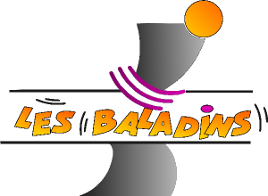

Les Baladins, une association de théâtre créée en 1989
De février à avril 1989, une nouvelle association théâtrale prend naissance à Saint-Berthevin. Nouveau conseil d’administration et nouveaux statuts de l’association qui porte toujours le nom de Association Théâtrale de Saint-Berthevin (ATSB). Hervé Garlantezec, issu de l’équipe d’acteurs, en est le premier président.
Août 1989, l’association prend définitivement le nom de Les Baladins.
Avril 1990, elle crée le premier Festival de théâtre Amateur de la Mayenne. Ce festival existe toujours.
Septembre 1993, création des ateliers théâtre pour les jeunes de 7 à 18 ans. A raison de 40 à 50 élèves par an, ils jouent un spectacle de fin d'année en juin devant les parents. Cet atelier jeune est la fierté de l'association Les Baladins et plusieurs jeunes ont intégré la troupe adulte. Malheureusement cet atelier a pris fin en juin 2011.
En 2002, création du 3ème Art, atelier théâtre pour les retaités de la commune. Sous la direction de Martine Fournier, cet atelier a proposé, en 2002, un spectacle à destination des professionnels de santé sur le thème de la confidentialité. Ensuite, au gré des demandes, cet atelier joue aussi pour les maisons de retraites, pour le Téléthon, la MSA,...
2012, changement de metteur en scène : Alain Fournier cède sa place à Tony Babin issu des ateliers théâtre. Les années qui ont suivi ont vu aussi Maud Lecapitaine et Bastien Delaroche comme metteur en scène ou assistant de metteur en scène.
2018, changement de président : Alain Fournier cède sa place à Tony Babin et changement de secrétaire : Dominique Taillandier cède sa place à Bastien Delaroche.
2020, changement de secrétaire : Bastien Delaroche cède sa place à Dominique Taillandier.
Le bureau
- Président : Tony Babin
- Vice-présidente : Maud Lecapitaine
- Secrétaire : Dominique Taillandier
- Secrétaire adjoint : Odile Lemesle
- Trésorier : Frédéric Tremblais
- Trésorière adjointe : Nathalie Maignan
- Membres : Isabelle Corvée, Bastien Delaroche, Sylvain Colnot
- Metteurs en scène : Tony Babin, Maud Lecapitaine et Alain Fournier